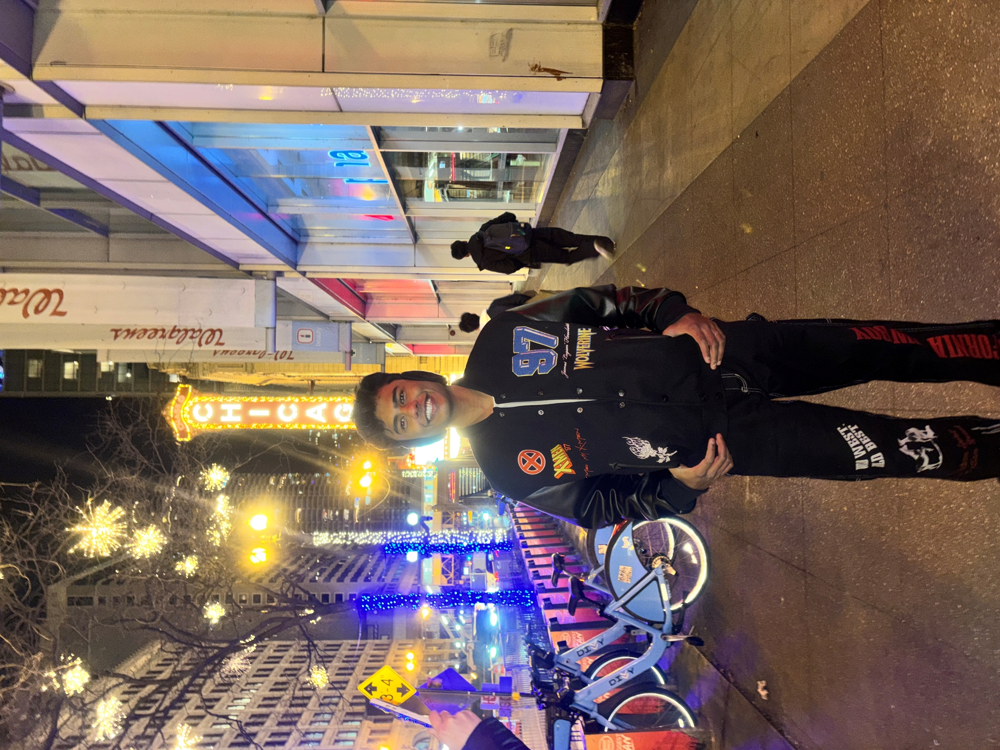

About Me
Hi there, I am Aayush Layane. I am a sophmore mechanical engineering honors student at the College of Engineering and Applied Sciences, University of Cincinnati. I was drawn to the University of Cincinnati due to its very strong and rigorous engineering program and an excellent co-op program and gaining hands-on experience from those skills.
I am from Navi Mumbai, India. My strengths are problem solving, critical thinking, detail-orientedness, adaptability, and leadership. I am someone who is curious and wants to constantly learn about new things. I choose engineering because I want to excel in my field, make an impact, and build a strong personal brand.
I'm passionate about exploring diverse interests that fuel my creativity and curiosity. From the thrill of Formula 1 and my love for cars to the artistry of cooking and photography, I find joy in both high-speed action and capturing life's finer details. Traveling and experiencing new cultures inspires me, while video games relax me and immerse me in new worlds.
